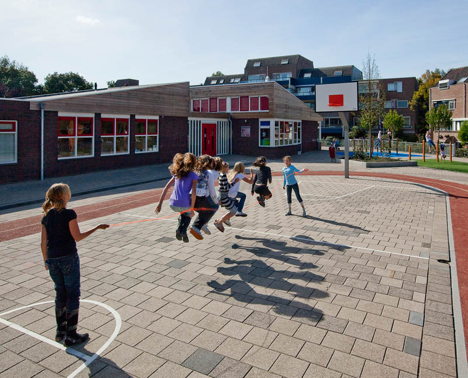

2013:
stage basisscool De Meridiaan.
opdrachten wat ik moest uitvoeren:
- helpen voorbereiden van de les.
- kinderen helpen met hun opdrachten.
- Afgemaakte opdrachten afteken.
2014:
stage supermarkt MCD.
opdrachten die ik moest uitvoeren:
- Vakkenvullen( schappen vullen met de producten die daar horen).
- Spiegelen(artikelen naar voren halen).
- Restaureren(het in orde brengen van de schappen.
- Schoonmaken.
- Optellen van producten en invullen in het systeem.
na mijn stage mocht ik ook gelijk gaan werken bij supermarkt MCD.